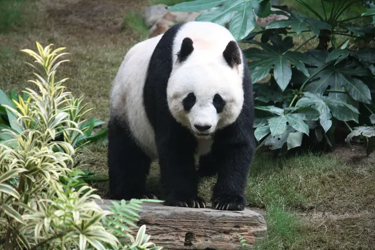

Is giant panda habitat shrinking?
Wild giant panda numbers have been rising, but their forest home tells a more complicated story. Satellite research published in 2017 found that panda habitat covered less area and was more broken up in 2013 than in 1988, the year the species was listed as endangered. Since then China has joined dozens of reserves into one national park, so the honest answer is that habitat is recovering in some ways while fragmentation is still the big worry.

More pandas, but what about their forests?
In 2016 the IUCN Red List moved the giant panda from Endangered to Vulnerable. The change was good news, driven mainly by national surveys showing more wild pandas than before. You can read the full story in are giant pandas still endangered.
But a population count is only one way to measure how safe a species is. Giant pandas depend on cool mountain forests with a thick bamboo understory, found only in parts of Sichuan, Shaanxi and Gansu in China. If those forests shrink or break apart, a growing population can still end up in a fragile position. That is the question a team of Chinese and American scientists set out to test.
What 25 years of satellite images showed
Weihua Xu, Andrés Viña, Stuart Pimm, Jianguo Liu, Zhiyun Ouyang and colleagues published their analysis in Nature Ecology and Evolution in 2017. They combined detailed mapping data with remotely sensed images and applied the same methods across roughly four decades of records, so that habitat in different years could be compared fairly.
Their headline finding was that panda habitat covered less area and was more fragmented in 2013 than in 1988, when the species was first listed as endangered. In plain terms, by this measure the forest pandas rely on was in worse shape than it had been when alarm bells first rang, even though more pandas were being counted.
The authors described the giant panda's conservation status as a barometer of global conservation efforts. Their point was not that the Red List change was wrong, but that judging extinction risk on head counts alone can hide a slower problem in the landscape.
Why broken up habitat matters
Fragmentation means one large block of forest gets split into smaller patches by roads, farmland, villages, dams and other development. For a giant panda this causes several problems:
- Finding mates is harder. Pandas live alone and meet mainly in the short breeding season, so small isolated groups have fewer partners to choose from and face a higher risk of inbreeding.
- Bamboo die offs hit harder. Many bamboo species flower and die all at once over large areas. A panda in a big connected forest can move to another patch or species; a panda trapped in a small patch may not be able to.
- Chance events matter more. Disease, a landslide or a bad year can wipe out a very small group entirely.
Because pandas spend most of the day eating and resting to save energy (see how much giant pandas sleep), long journeys across open, disturbed ground are costly for them. Connected forest makes those moves far easier.
A protected area is not automatically protected
An earlier study showed how habitat can slip away even on paper protected land. In 2001, Jianguo Liu and colleagues published a paper in Science on Wolong Nature Reserve in Sichuan, set up in 1975 as a flagship reserve for giant pandas. Using remote sensing data from before and after the reserve was established, they found that the reserve had become more fragmented and less suitable for pandas over time.
Strikingly, the rate at which high quality panda habitat was lost was much higher after the reserve was created than before, and fragmentation of the best habitat became far more severe. After establishment, habitat loss inside the reserve rose to levels similar to or higher than outside it. The study became a widely cited lesson that drawing a boundary on a map is only the first step; managing how people use the land inside it matters just as much.
The next pressure: a warming climate
Looking ahead, climate change adds another layer. Renqiang Li and colleagues, writing in Biological Conservation in 2015, combined climate projections with data on where bamboo can grow to model future panda habitat. Their results suggested that 52.9 to 71.3 percent of current giant panda habitat could be lost this century, that the remaining habitat could become more fragmented and isolated, and that about 20 percent of existing reserves could lose all suitable habitat.
The authors also suggested that it may become increasingly necessary to move small panda populations from the southwestern part of the range toward the northwestern part. Models like this are projections, not certainties, but they show why planners now think about where panda forests will be in decades to come, not just where they are today.
What is being done
China's main response has been to connect protected land. The Giant Panda National Park, established in 2021, joined 73 previously separate nature reserves across Sichuan, Shaanxi and Gansu into one park of about 22,000 square kilometres. According to China's National Forestry and Grassland Administration, as reported by Xinhua, the park links the habitats of 13 local panda populations, includes ecological corridors between groups, and total panda habitat has grown to about 2.58 million hectares. Part of the landscape is also a UNESCO World Heritage Site, the Sichuan Giant Panda Sanctuaries.
Corridors are the direct answer to the fragmentation problem the satellite studies identified. Whether they work is something future surveys and remote sensing will need to measure, using the same careful methods researchers have applied in the past.
The short answer
Giant panda habitat shrank and broke into smaller pieces between 1988 and 2013, according to satellite analysis, even as panda numbers rose. Today's effort to join reserves and build corridors aims to reverse that, while climate change may shift where bamboo and pandas can live in the future. To learn more about where pandas live, see our panda habitat guide and the conservation page.
Frequently asked questions
Is giant panda habitat shrinking?
It depends on the period and the measure. A satellite study by Xu and colleagues (2017) in Nature Ecology and Evolution found panda habitat covered less area and was more fragmented in 2013 than in 1988. Since then China has joined many reserves into the Giant Panda National Park and reports that total habitat has grown, but fragmentation remains a central concern.
Why are giant pandas no longer listed as endangered?
In 2016 the IUCN Red List moved the giant panda from Endangered to Vulnerable, mainly because counts of wild pandas had increased. Researchers such as Xu and colleagues (2017) argued that the state of the habitat should also be weighed when judging extinction risk.
Does a nature reserve always protect panda habitat?
Not automatically. Liu and colleagues (2001) used remote sensing in Science to show that high quality panda habitat inside Wolong Nature Reserve was lost and fragmented faster after the reserve was created in 1975 than before.
Will climate change affect giant panda habitat?
Models suggest it could. Li and colleagues (2015) projected that 52.9 to 71.3 percent of current giant panda habitat could be lost this century under recent climate scenarios, and that about 20 percent of reserves could lose all their habitat.
What is habitat fragmentation?
It is when one large area of forest is broken into smaller, separated patches by roads, farms, settlements or other development. Pandas in small isolated patches find it harder to meet mates and to move when their bamboo dies back.
Sources
- Xu, W., Viña, A., Kong, L., Pimm, S. L., Zhang, J., Yang, W. et al. (2017), Reassessing the conservation status of the giant panda using remote sensing, Nature Ecology and Evolution 1: 1635 to 1638. DOI 10.1038/s41559-017-0317-1
- Liu, J., Linderman, M., Ouyang, Z., An, L., Yang, J. and Zhang, H. (2001), Ecological degradation in protected areas: the case of Wolong Nature Reserve for giant pandas, Science 292(5514): 98 to 101. DOI 10.1126/science.1058104
- Li, R., Xu, M., Wong, M. H. G., Qiu, S., Li, X., Ehrenfeld, D. and Li, D. (2015), Climate change threatens giant panda protection in the 21st century, Biological Conservation 182: 93 to 101. DOI 10.1016/j.biocon.2014.11.037
- IUCN Red List: Giant panda, Ailuropoda melanoleuca (2016 assessment)
- Xinhua (23 November 2025): National park boosts panda population
- UNESCO World Heritage Centre: Sichuan Giant Panda Sanctuaries
Cite this page
APA
PandasWise. (2026, October 28). Is giant panda habitat shrinking? https://pandaswise.com/blog/is-giant-panda-habitat-shrinking.html
MLA
"Is giant panda habitat shrinking?" PandasWise, 28 Oct. 2026, https://pandaswise.com/blog/is-giant-panda-habitat-shrinking.html.
Chicago
PandasWise. "Is giant panda habitat shrinking?" PandasWise. October 28, 2026. https://pandaswise.com/blog/is-giant-panda-habitat-shrinking.html.